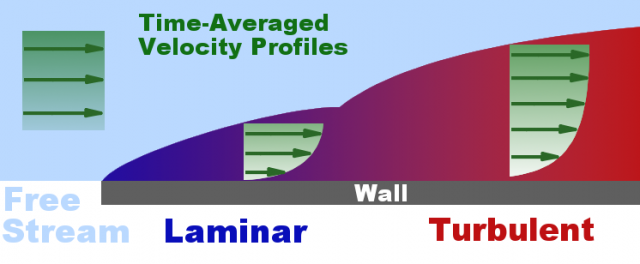

Boundary Layers
Boundary layers are everywhere. We live within the Earth's planetary boundary layer. Airplanes exploit boundary layers to fly. Golf balls have dimples that alter boundary layer characteristics to maximize their flight time. So what are boundary layers?
Boundary Layer: Shows free stream, laminar and turbulent time-averaged velocity profiles in green. The vertical scale is greatly enlarged.
Whenever a fluid (such as air or water) moves relative to a solid surface (known as a wall in boundary layer terminology) the flow adjacent to the wall is brought to rest. The region between the wall and the unaffected free stream fluid is called a boundary layer. Within the boundary layer viscous effects are dominant due to the rapid change in velocity tangential to the wall and the resistance to that velocity gradient posed by the fluid's viscosity. Outside the boundary layer viscous effects are negligible.
Ludwig Prandtl first defined a boundary layer in 1904 and aerodynamics was never the same. A boundary layer plays a significant role in accounting for the skin-friction drag around objects such as cars and airplanes. The majority of convective heat transfer is attributed to the flow characteristics within the boundary layer.
The Earth's planetary boundary layer varies in thickness according to seasons and weather, but typical heights are 457m for large cities, 366m for suburbs, 274m for open terrain, and 213m for open sea. The boundary layer thickness on a golf ball is approximately 1mm (0.001m). So boundary layers vary in thickness from immense to miniscule.
Boundary layers can be characterized into 2 basic types, based on Reynolds number:
- Laminar – smooth flow with low skin-friction drag, but prone to separate (inducing more drag) under adverse pressure gradients
- Turbulent – near chaotic flow with higher skin-friction drag, but less prone to separate under adverse pressure gradients (hence dimples on golf balls)
An adverse pressure gradient occurs when a fluid progresses from a low pressure (high velocity) region towards a high pressure (low velocity) region, such as in a diffuser. Under the influence of a strong adverse pressure gradient a fluid will separate from an attached surface and produce a localized recirculation zone.
Conversely a favorable pressure gradient is encountered when a fluid progresses from a high pressure (low velocity) region towards a low pressure (high velocity) region, such as around the leading edge of an airfoil. A favorable pressure gradient ensures that the flow within a boundary layer does not separate from the wall.
Feedback
Questions? Ideas? Problems?